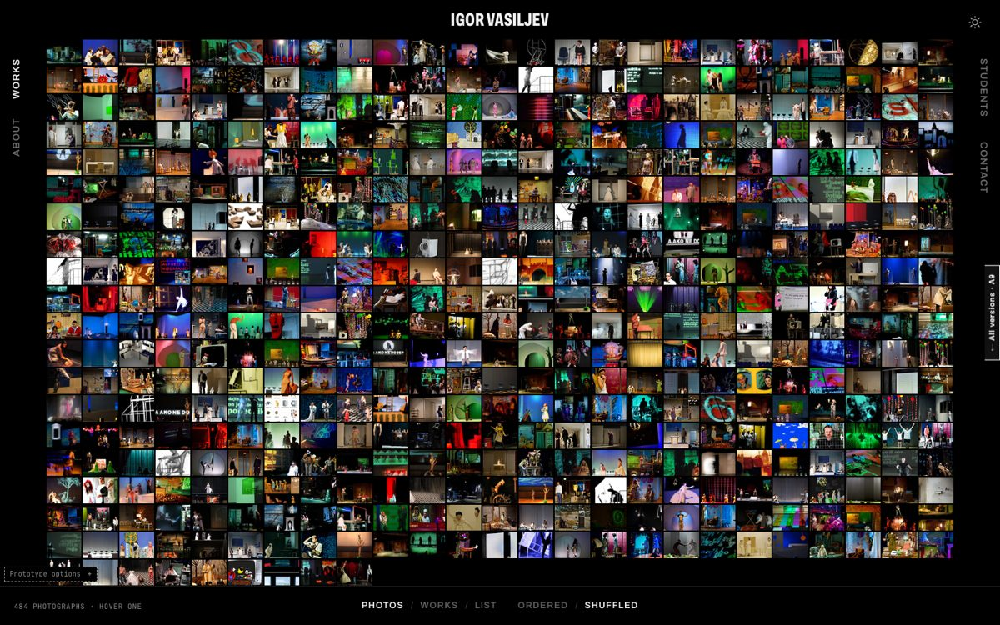
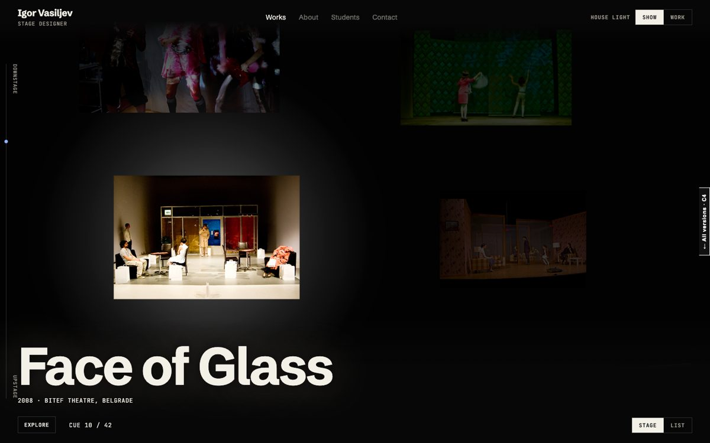
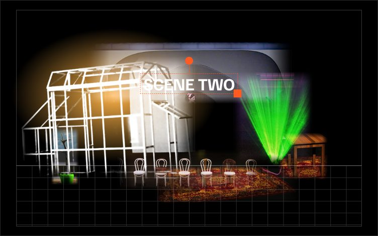

Early prototypes, built on the work, photos and texts from web-stage.org. Texts for each work and the student page are still placeholders. Not public: please don't share the link.
Every photograph of every production as a small tile. Hover one and it comes forward while the rest go dark. Photos / Works / List and Ordered / Shuffled at the bottom; the sun and moon switch light and dark.
Open →
The page is a dark stage and the cursor is a follow-spot. It finds a production and lights it; its title appears in large type, like words projected on a set.
Open →
For students: build a new stage from pieces of past productions (surfaces, frames, facades, objects, light, words). Every piece is credited to the work it comes from.
Open →
The small options tabs in the corners ("Prototype options", "Explore") are for comparing variants: menu position, background colour, control style, spotlight colour. Try them freely.